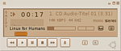
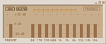
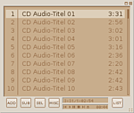

BMP
Archivierte Anleitung
Dieser Artikel wurde archiviert, da er - oder Teile daraus - nur noch unter einer älteren Ubuntu-Version nutzbar ist. Diese Anleitung wird vom Wiki-Team weder auf Richtigkeit überprüft noch anderweitig gepflegt. Zusätzlich wurde der Artikel für weitere Änderungen gesperrt.
Dieser Artikel wurde für die folgenden Ubuntu-Versionen getestet:
Zum Verständnis dieses Artikels sind folgende Seiten hilfreich:
BMP  (Beep Media Player) ist ein Multimediaspieler, der die verschiedensten Audioformate (u.a. MPEG layer 1/2/3, WAV, Ogg Vorbis) abspielen kann und die GTK2 Bibliotheken nutzt. Neben der CD-Wiedergabe ist es ebenfalls möglich Shoutcasts/Icecaststreams abzuspielen. Er ist nicht so bekannt wie XMMS, aus dem er in seiner Entwicklungsgeschichte hervorgegangen ist - verfügt aber über ähnliche Funktionen. Er kann ebenfalls durch Skins sein Äußeres verändern und es gibt eine Reihe von nützlichen Plugins... Zum Vergrößern der Bilder diese anklicken.
(Beep Media Player) ist ein Multimediaspieler, der die verschiedensten Audioformate (u.a. MPEG layer 1/2/3, WAV, Ogg Vorbis) abspielen kann und die GTK2 Bibliotheken nutzt. Neben der CD-Wiedergabe ist es ebenfalls möglich Shoutcasts/Icecaststreams abzuspielen. Er ist nicht so bekannt wie XMMS, aus dem er in seiner Entwicklungsgeschichte hervorgegangen ist - verfügt aber über ähnliche Funktionen. Er kann ebenfalls durch Skins sein Äußeres verändern und es gibt eine Reihe von nützlichen Plugins... Zum Vergrößern der Bilder diese anklicken.
Installation¶
Zur Installation [1] benötigt man folgende Pakete, wobei das zweite Paket nur für die Nutzung von Erweiterungen notwendig ist:
beep-media-player (universe)
beep-media-player-dev (universe)
In Ubuntu Hardy ist der Beep Media Player nicht mehr enthalten.
Konfiguration¶
Nach erfolgreicher Installation findet man den BMP im GNOME-Menü unter "Anwendungen -> Unterhaltungsmedien".
Nach dem ersten Start des Multimediaspielers BMP erscheint die Oberfläche des Programms. Nun im oberen Bereich des Programms einen Rechtsklick ausführen und im nun erscheinenden Dialog "Einstellungen" auswählen. Im Menü BMP-Einstellungen gibt es einige Kategorien. Diese sind: "Aussehen", "Equalizer", "Maus", "Wiedergabeliste und Plugins".

Aussehen¶
Da das Standardskin vom BMP nicht jedem zusagt, kann man es ändern.
Sofern noch kein passendes Skin vorhanden ist, auf eine der unten in den Links genannten Seiten gehen und in Ruhe eines auswählen. Zur Verfügung stehen Skins für die Player: BMP, Winamp und XMMS. Diese können gezipt oder als wsz Datei vorliegen. Sofern noch aus vergangenen Zeiten ein liebgewonnenes Skin vorhanden ist, kann dieses ggf. zu neuem Leben erwachen...
Ist die Wahl getroffen wird das Skin auf den PC kopiert. Nun gibt es einige Möglichkeiten dieses in den Skinordner von BMP zu bekommen.
Zum einen Nautilus starten und auf "Ansicht -> Verborgene Dateien anzeigen" klicken. In das Verzeichnis wechseln, in dem sich das Skin befindet. Auf dieses einen beherzten Rechtsklick machen und "Kopieren" wählen. Dann in den persönlichen Ordner wechseln und das versteckte Verzeichnis .bmp öffnen. Das darin untergebrachte Verzeichnis Skins ebenfalls öffnen und in diesem erneut einen Rechtsklick ausführen. Nun "Einfügen" wählen. - Fertig. Die gewählte Datei wird ins Verzeichnis kopiert.
Sollen alle Nutzer das Skin verwenden können, muss dieses in das Verzeichnis /usr/share/bmp/Skins kopiert werden (vgl. Ausführungen im Beitrag XMMS). In diesem Fall sind Root-Rechte erforderlich.
Alternativ können Konsoleros folgende Befehle im Terminal [3] eingegeben:
cd DAS_VERZEICHNIS_WO_DAS_SKIN_LIEGT cp SKINNAME.DATEIENDUNG /home/BENUTZER_NAME/.bmp/Skins
Sollte das Fenster "BMP-Einstellungen" noch geöffnet sein, dann dieses zuerst schließen.
Abschließend wird der Menüpunkt "BMP-Einstellungen" erneut gestartet. In der Kategorie "Aussehen" erscheint nun neben dem Default-Skin das soeben kopierte. Dieses auswählen und schon ändert sich das Aussehen des Programms.
Da der BMP noch ein wenig verloren aussieht, im oberen Bereich einen Rechtsklick ausführen und die Punkte "Wiedergabeliste zeigen" und "Equalizer zeigen" aus dem Unterpunkt "Ansicht" wählen.
Schon präsentiert sich der Player in einem anderen Licht. Die Anordnung der jeweiligen Elemente kann nach eigenen Vorstellungen variiert werden. Hierzu das jeweilige Fenster mit gedrückter linker Maustaste verschieben...
Equalizer¶
Um den Equalizer zu öffnen (falls noch nicht geschehen) im Hauptfenster auf EQ klicken.
 Nun öffnet sich dieser. Um ihn zu aktivieren einfach auf ON klicken. Nachdem dies erledigt ist, die Regler nach dem jeweiligen Geschmack anpassen. Beim Beenden des Programms speichert BMP die Einstellungen im Verzeichnis /home/DEINNAME/.bmp/config ab.
Weitergehende Informationen über die Verwendung von AUTO und Preset findet man auf der Projektseite. Hierbei handelt es sich um die Möglichkeit den EQ einem einzelnen Song anzupassen sowie um den Im- und Export von WinampEQF-Dateien.
Playlist¶
Der Abspiellisten-Editor wird durch einen Klick auf PL erreicht. Im unteren Fensterabschnitt befinden sich fünf Knöpfe, welche je ein neues Unterverzeichnis enthalten.

ADD enthält die Optionen: CD hinzufügen, Internetadresse abspielen sowie Dateien hinzufügen
SUB verschiedene Optionen, um Dateien aus der Liste zu löschen
SEL an/abwählen von Dateien
MISC Sortierung der Liste nach unterschiedlichsten Kriterien
LIST Erstellung einer neuen leeren Liste sowie speichern und laden der Liste(n)
Nachdem einige Dateien der Playlist hinzugefügt worden sind - z.B. Charts - empfiehlt es sich diese Liste abzuspeichern, damit beim nächsten Mal, wenn diese angehört werden soll, nicht erst die Daten gesucht werden müssen...
Es ist möglich - auch anwenderfreundlicher - neben dem BMP einen Dateimanager geöffnet zu haben. Von hier aus können die Songs per Drag&Drop in der Playlist abgelegt werden. (Linksklick auf die Datei im Dateimanager ausführen und die Taste gedrückt halten, dann in das Fenster Playlist herüberziehen und dort loslassen.)
Einstellungen¶
Shuffle und Repeat¶
Im Hauptfenster des BMPs befinden sich noch zwei weitere Einstellungsmöglichkeiten: [ ]Shuffle (Zufallswiedergabe) und [ ]Rep (Wiederholung).
Durch Anklicken der jeweiligen Option wird diese aktiviert [x] oder deaktiviert [ ].
Dateityp / Ordner mit BMP verknüpfen¶
Um einen bestimmten Dateitypen z.B. OGG mit dem BMP zu verknüpfen oder gleich das komplette Verzeichnis im BMP abzuspielen, müssen folgende simplen Einstellungen vorgenommen werden.
Plugins¶
Auf der Projektseite gibt es eine Vielzahl von Plugins für BMP. Unter anderem gibt es die Unterstützung für: AAC/MP4, WMA und Midi. Da diese nicht Bestandteil der Paketquellen sind, werden sie hier nicht erläutert. Bei Bedarf findet sich eine Sektion auf der Homepage (s. Quelle). Um sie nutzen zu können, muss das dev-Paket installiert sein.
Tastenkürzel¶
| Wiedergabe | |
| Taste(n) | Funktion |
| Alt + E | Playlist ein/ausblenden |
| Alt + G | Equalizer ein/ausblenden |
| Alt + I | Titeldetails editieren (ID3-Tag) |
| Strg + O | Programm immer im Vordergrund |
| Strg + S | BMP auf allen Arbeitsflächen |
| Strg + P | Einstellungen am Programm vornehmen |
| J | Für Jump: Suche in der Playliste |
| Strg + Q | Programm beenden |
Links¶
- Erstellt mit Inyoka
-
 2004 – 2017 ubuntuusers.de • Einige Rechte vorbehalten
2004 – 2017 ubuntuusers.de • Einige Rechte vorbehalten
Lizenz • Kontakt • Datenschutz • Impressum • Serverstatus -
Serverhousing gespendet von